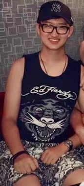

Zhengyang He's personal website

| Place willing to travel |
Japan |
China |
Europe |
NYC |
| Willingness to travel |
high |
medium |
low-medium |
low |
Education
Bachelor of Arts, Economics , York University, Toronto, ON, December 2017.
Bachelor of Administrative Studies, Finance, York University, Toronto, ON, June 2017.
Master of Financial Accountability, York University, Toronto, ON, March 2021
Projects Completed
Case Analysis, Management Policy, November 2016. Eli Lilly’s joint venture with Ranbaxy.
- Extracted critical Information about the issue from the case and used analysis methods based on theories.
- Co-wrote the analyze report.
- Analyzed and discussed findings, in order to give and decide the best alternative, resulted in 80% on the project.
Product Marketing, 2015. Case of McDonald’s pizza in 1990s.
- Conducted industrial analysis on McDonald’s point of view in 1990s.
- Figured out what caused the failure of the product and provided possible solutions.
- Provided prediction on future product performance based on theories.
- Co-wrote final implementation plan; resulted in 80% on the report.
Skills
• Thorough exposure to Financial Sectors through both education and internship
• Proficient in Microsoft Word, Excel, Powerpoint, Windows-OS.
• Strong communication and teamwork ability developed from academic group projects.
• Outstanding researching and analytical skill demonstrated by various academic projects.
• Trilingual: English, Mandarin, Japanese (elementary).